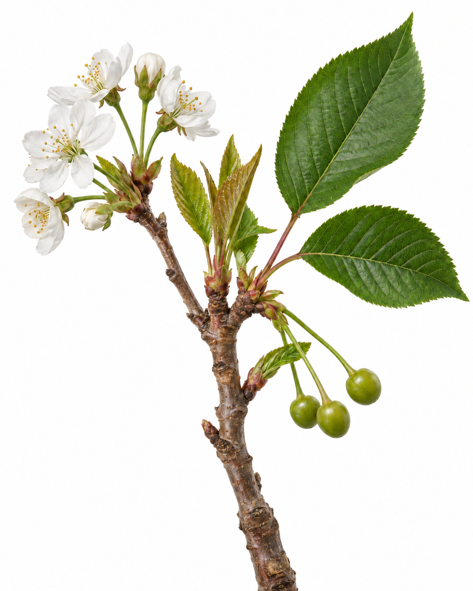

01 · The question 02 · The transport routes 03 · Reading the result

SHUCK FALL / UNDERSTANDING CALCIUM
Calcium in At shuck fall, cell division is helping establish fruit size potential. Calcium has a structural role in new cell walls.
Illustration of different stages
An adequate leaf result does not establish The route into the fruit helps explain why.
FOLLOW THE TWO TRANSPORT PATHWAYS →
01 / 03
TWO DIFFERENT PATHWAYS
Both help support fruit development. They carry different materials.
FROM ESTABLISHED LEAVES
Phloem Sugars move towards growing fruit.
FROM ROOT UPTAKE
Xylem Calcium largely arrives with the flow of water.
Calcium is poorly redistributed from older tissues. Its presence in a leaf does not prove delivery to the fruit.
Schematic pathways over a botanical illustration. Flow is not quantified.
02 / 03
From paired leaves to a block decision DSA
Read the youngest fully developed and oldest still-vital leaf samples together, using a consistent sampling protocol.
EVIDENCE WHAT IT HELPS US EXAMINE
Paired leaf results Nutrient status in the sampled leaves, including differences between leaf ages. Earlier tests and recent inputs How the nutrient picture has changed through the program. Roots, moisture and crop stage Possible constraints on uptake and delivery to developing tissues.
Keep the calcium question in context. A difference between young and old leaves is not automatically a deficiency, and the leaf result is not a fruit measurement.
Assess supply, uptake and delivery before choosing the next input. Adding more calcium does not automatically get more into the fruit.
Plan the sample and results discussion together with your Hybrid Ag agronomist.
03 / 03 ← Previous 1 / 3 Next →
Draft caption Copy caption Calcium in the leaf isn’t calcium in the cherry.
A leaf result gives us useful evidence about the tissue sampled. It does not tell us exactly how much calcium reached the fruit. The transport route helps explain why: sugars can move from established leaves to growing cherries through the phloem, while calcium largely travels with water through the xylem.
At shuck fall, while cell division is contributing to size potential, we interpret paired Differential Sap Analysis (DSA) results alongside earlier tests, recent inputs and the block’s condition. That helps frame the next decision: whether nutrition needs adjusting, or whether a delivery constraint needs investigating first.
Arrange the shuck-fall check and results discussion with your Hybrid Ag agronomist.
Calendar timing
Technical sources and image notes The explanation draws on Hybrid Ag’s Cherry Nutrition and Bud & Flower webinars, Chelsea’s Fertigation & Transpiration discussion, the cherry sampling kit and the 28 August 2026 technical discussion. Shuck fall is a program checkpoint; it is not presented as the first DSA sample of the season.
Winkler, Fiedler & Knoche: original sweet-cherry calcium-transport research supports the xylem mechanism. Washington State University: sweet-cherry nutrition explains the limits of leaf calcium as an indicator of fruit calcium. This is not a claim that a specific DSA-to-fruit prediction model was tested.
Alkio et al.: developing sweet-cherry fruit supports early cell division alongside other contributors to fruit growth. NovaCropControl’s sweet-cherry sampling guide provides crop-specific sampling instructions.
The branch is an AI-generated botanical illustration combining early developmental stages. Its large leaves are not a validated sampling-pair example. Arrows distinguish transport pathways without representing measured flow. No fabricated laboratory values, universal sampling interval or crop-response guarantee is included.
{kind=link}